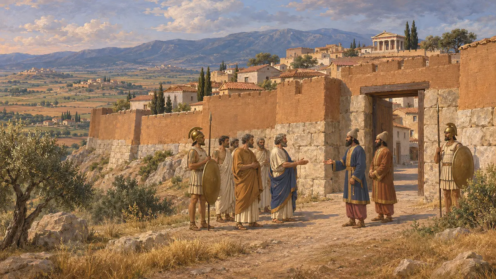
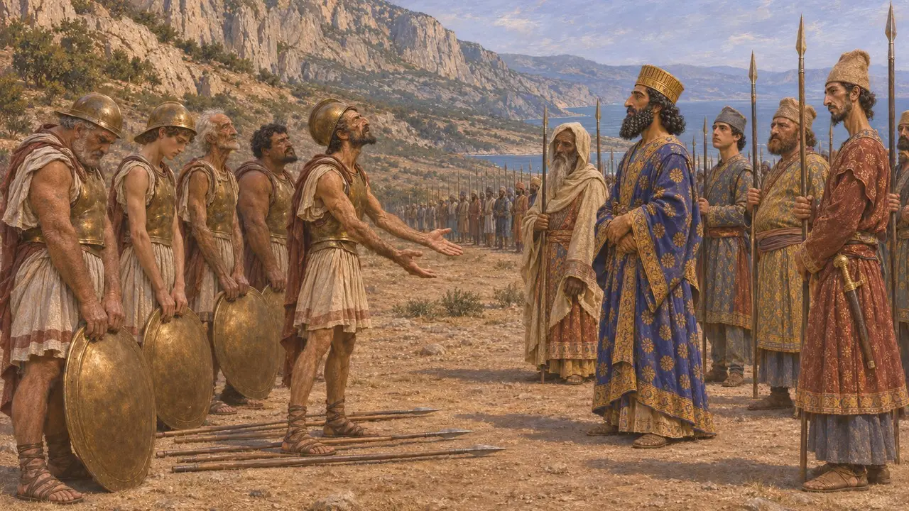
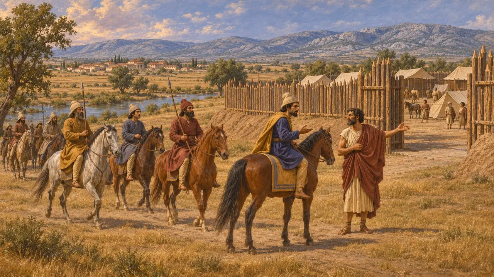
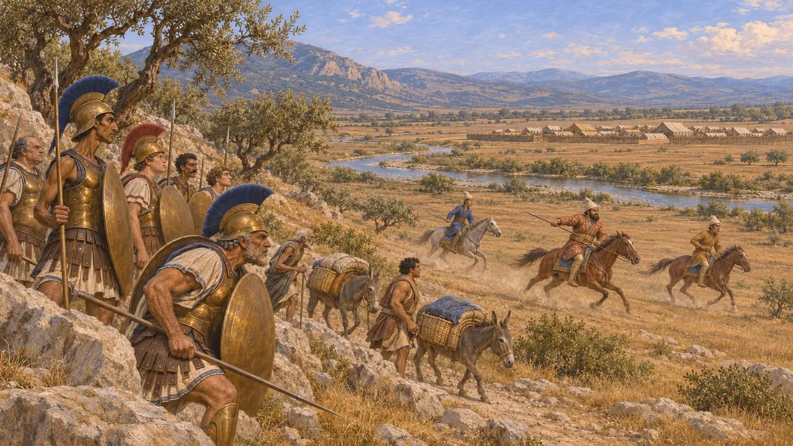
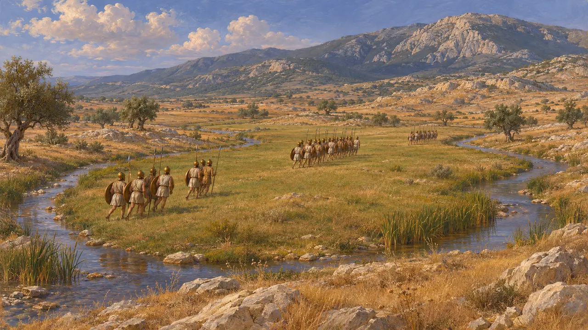

ボイオティアは、キタイロン山の北に広がるギリシア中部の地方で、テーバイがその中心都市でした。ヘロドトスの記述では、紀元前480年にはその大半の都市がクセルクセスの側につき、紀元前479年にはマルドニオスがここへ退きました。ペルシアによるギリシア本土侵攻に決着をつけたプラタイアの戦いは、ボイオティアの地で戦われました。
ゲームでは： 本作がボイオティアに言及するのは、年代記の項目と、プラタイアの出来事の記事で、マルドニオスが退いて最終決戦が行われた地方としてです。独自の仕組みはありません。

テーバイとボイオティアの諸都市
古代の記述ヘロドトスはボイオティアを、それぞれ独立した諸都市からなる地域として扱い、その中ではテーバイが最強であったとする。キタイロン山の斜面にあるプラタイアは、アテナイと同盟していたため、顕著な例外であった。ヘロドトスはペルシア側に寝返ったテーバイ人に対して敵意を抱いており、現代の読者は、アテナイ人の感情が彼の描写に色を添えた可能性を認めている。
Herodotus 6.108; Herodotus 9.15

紀元前480年のメディズム
古代の記述ヘロドトスによれば、クセルクセスの軍が進軍すると、ボイオティア人の大半は服属したが、テスピアイとプラタイアは拒んだ。テルモピュライで踏みとどまったテーバイ人は、不本意ながらそこに留め置かれていたといい、強いられたのだと主張してクセルクセスに降伏した。さらに彼は、ペルシア人がその後テスピアイとプラタイアを焼き払ったと付け加えている。
Herodotus 7.132; Herodotus 7.222; Herodotus 7.233; Herodotus 8.50

マルドニオス、ボイオティアへ退く
古代の記述ヘロドトスによれば、紀元前479年、マルドニオスはアテナイを再び占領したのち、アッティカから撤退してボイオティアに入った。そこは険しいアッティカの地よりも彼の騎兵に適していた。ヘロドトスは、テーバイ人の助言と友好をその背景の一部として語っている。ヘロドトスの伝えるところでは、彼はテーバイ近郊のアソポス川のほとりに防備を固めた陣営を築いた。
Herodotus 9.13; Herodotus 9.15

プラタイアの地
古代の記述ギリシア軍はキタイロン山を越え、プラタイア近郊の山麓に陣取り、アソポス川を挟んでペルシア人と対峙した。ヘロドトスは、数日にわたる小競り合いを伝えている。その間、ペルシア騎兵はギリシア軍の補給路を荒らし、ガルガフィアの泉を汚した。ヘロドトスによれば、ギリシア軍は陣を移し、決戦の最中にペルシア軍の陣営は彼らの手に落ちたという。
Herodotus 9.19; Herodotus 9.49; Herodotus 9.70

戦場の正確な位置
係争中現代の歴史家たちは、戦いが実際にどの場所で行われたのかについて意見が分かれている。ヘロドトスの描く地形は、現実の景観と照らし合わせにくいからである。ギリシア軍が移動した「島」の位置や、いくつかの流れの経路も議論の的となっている。ギリシア軍の機動に関する彼の記述についても、見解は一致していない。
Herodotus 9.51
出典
- Herodotus 9.13-9.15
- Herodotus 7.132
- Herodotus 7.233
- Herodotus 9.19-9.70
- Herodotus 8.50